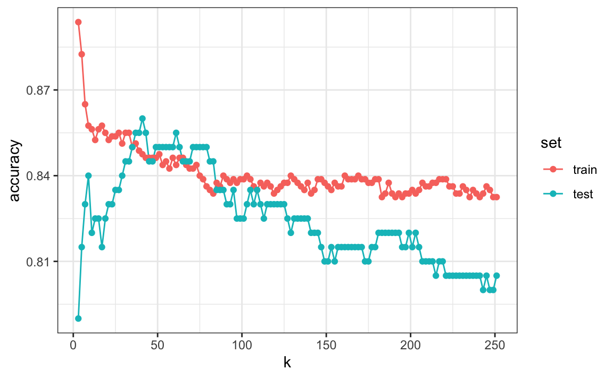

Capítulo 29 Validación cruzada
En este capítulo, presentamos la validación cruzada (cross validation en inglés), una de las ideas más importantes de machine learning. Aquí nos centramos en los aspectos conceptuales y matemáticos. Describiremos cómo implementar la validación cruzada en la práctica con el paquete caret en la Sección 30.2 del proximo capitulo. Para motivar el concepto, utilizaremos los dos datos de dígitos predictores presentados en la Sección 27.8 y cubriremos, por primera vez, un algoritmo real de machine learning: k vecinos más cercanos (kNN o k-nearest neighbors en inglés).
29.1 Motivación con k vecinos más cercanos
Empecemos cargando los datos y mostrando un gráfico de los predictores con resultados representados con color.
library(tidyverse)
library(dslabs)
data("mnist_27")
mnist_27$test%>% ggplot(aes(x_1, x_2, color = y)) + geom_point()
Utilizaremos estos datos para estimar la función de probabilidad condicional:
\[ p(x_1, x_2) = \mbox{Pr}(Y=1 \mid X_1=x_1 , X_2 = x_2) \]
como se define en la Sección 28.4. Con kNN estimamos \(p(x_1, x_2)\) de manera similar a la suavización de compartimientos. Sin embargo, como veremos, kNN es más fácil de adaptar a múltiples dimensiones. Primero, definimos la distancia entre todas las observaciones según los atributos. Entonces, para cualquier punto \((x_1,x_2)\) para el cual queremos un estimador de \(p(x_1, x_2)\), buscamos los \(k\) puntos más cercanos a \((x_1,x_2)\) y calculamos el promedio de los 0s y 1s asociados con estos puntos. Nos referimos al conjunto de puntos utilizados para calcular el promedio como el vecindario (neighborhood en inglés). Debido a la conexión que describimos anteriormente entre las expectativas condicionales y las probabilidades condicionales, esto nos da un estimador \(\hat{p}(x_1,x_2)\), al igual que el suavizador de compartimiento nos dio un estimador de una tendencia. Como en el caso de los suavizadores de compartimientos, podemos controlar la flexibilidad de nuestro estimador, en este caso a través del parámetro \(k\): \(k\)s más grandes resultan en estimadores más suaves, mientras que \(k\)s más pequeñas resultan en estimadores más flexibles y más ondulados.
Para implementar el algoritmo, podemos usar la función knn3 del paquete caret. Mirando el archivo de ayuda para este paquete, vemos que podemos llamarlo de una de dos maneras. Utilizaremos el primero en el que especificamos una formula y un data frame. El data frame contiene todos los datos que se utilizarán. La fórmula tiene la forma outcome ~ predictor_1 + predictor_2 + predictor_3 y así sucesivamente. Por lo tanto, escribiríamos y ~ x_1 + x_2. Si vamos a usar todos los predictores, podemos usar el . así y ~ .. La llamada final se ve así:
library(caret)
knn_fit <- knn3(y ~ ., data = mnist_27$train)Para esta función, también debemos elegir un parámetro: el número de vecinos para incluir. Comencemos con el valor predeterminado \(k=5\).
knn_fit <- knn3(y ~ ., data = mnist_27$train, k = 5)En este caso, dado que nuestro set de datos es equilibrado y nos preocupamos tanto por la sensibilidad como por la especificidad, utilizaremos la exactitud para cuantificar el rendimiento.
La función predict para knn produce una probabilidad para cada clase. Mantenemos la probabilidad de ser un 7 como el estimador \(\hat{p}(x_1, x_2)\):
y_hat_knn <- predict(knn_fit, mnist_27$test, type = "class")
confusionMatrix(y_hat_knn, mnist_27$test$y)$overall["Accuracy"]
#> Accuracy
#> 0.815En la Sección 27.8, utilizamos la regresión lineal para generar un estimador.
fit_lm <- mnist_27$train %>%
mutate(y = ifelse(y == 7, 1, 0)) %>%
lm(y ~ x_1 + x_2, data = .)
p_hat_lm <- predict(fit_lm, mnist_27$test)
y_hat_lm <- factor(ifelse(p_hat_lm > 0.5, 7, 2))
confusionMatrix(y_hat_lm, mnist_27$test$y)$overall["Accuracy"]
#> Accuracy
#> 0.75Y vemos que kNN, con el parámetro predeterminado, ya supera la regresión. Para ver por qué este es el caso, graficaremos \(\hat{p}(x_1, x_2)\) y lo compararemos con la probabilidad condicional verdadera \(p(x_1, x_2)\):

Vemos que kNN se adapta mejor a la forma no lineal de \(p(x_1, x_2)\). Sin embargo, nuestro estimador tiene algunas islas de azul en el área roja, lo que intuitivamente no tiene mucho sentido. Esto se debe a lo que llamamos sobreentrenamiento (overtraining en inglés). Describimos el sobreentrenamiento en detalle a continuación. Este es la razón por la que tenemos una mayor exactitud en el set de entrenamiento en comparación con el set de evaluación:
y_hat_knn <- predict(knn_fit, mnist_27$train, type = "class")
confusionMatrix(y_hat_knn, mnist_27$train$y)$overall["Accuracy"]
#> Accuracy
#> 0.882
y_hat_knn <- predict(knn_fit, mnist_27$test, type = "class")
confusionMatrix(y_hat_knn, mnist_27$test$y)$overall["Accuracy"]
#> Accuracy
#> 0.81529.1.1 Sobreentrenamiento
El sobreentrenamiento es peor cuando fijamos \(k=1\). Con \(k=1\), el estimador para cada \((x_1, x_2)\) en el set de entrenamiento se obtiene solo con la \(y\) correspondiente a ese punto. En este caso, si \((x_1, x_2)\) son únicos, obtendremos una exactitud perfecta en el set de entrenamiento porque cada punto se usa para predecirse a sí mismo. Recuerden que si los predictores no son únicos y tienen resultados diferentes para al menos un set de predictores, entonces es imposible predecir perfectamente.
Aquí ajustamos un modelo kNN con \(k=1\):
knn_fit_1 <- knn3(y ~ ., data = mnist_27$train, k = 1)
y_hat_knn_1 <- predict(knn_fit_1, mnist_27$train, type = "class")
confusionMatrix(y_hat_knn_1, mnist_27$train$y)$overall[["Accuracy"]]
#> [1] 0.998Sin embargo, la exactitud del set de evaluación es peor que la regresión logística:
y_hat_knn_1 <- predict(knn_fit_1, mnist_27$test, type = "class")
confusionMatrix(y_hat_knn_1, mnist_27$test$y)$overall["Accuracy"]
#> Accuracy
#> 0.735Podemos ver el problema de sobreajuste en estos gráficos.

Las curvas negras denotan los límites de la regla de decisión.
El estimador \(\hat{p}(x_1, x_2)\) sigue los datos de entrenamiento muy de cerca (izquierda). Pueden ver que en el set de entrenamiento, los límites se han trazado para rodear perfectamente un punto rojo único en un mar azul. Como la mayoría de los puntos \((x_1, x_2)\) son únicos, la predicción es 1 o 0 y la predicción para ese punto es la etiqueta asociada. Sin embargo, tan pronto introducimos el set de entrenamiento (derecha), vemos que muchas de estas pequeñas islas ahora tienen el color opuesto y terminamos haciendo varias predicciones incorrectas.
29.1.2 Sobre-suavización
Aunque no tan mal como con los ejemplos anteriores, vimos que con \(k=5\) también hemos sobreentrenado. Por lo tanto, debemos considerar una \(k\) más grande. Probemos, por ejemplo, un número mucho mayor: \(k=401\).
knn_fit_401 <- knn3(y ~ ., data = mnist_27$train, k = 401)
y_hat_knn_401 <- predict(knn_fit_401, mnist_27$test, type = "class")
confusionMatrix(y_hat_knn_401, mnist_27$test$y)$overall["Accuracy"]
#> Accuracy
#> 0.79Esto resulta ser similar a la regresión:

Este tamaño de \(k\) es tan grande que no permite suficiente flexibilidad. A esto lo llamamos sobre-suavización (over-smoothing en inglés).
29.1.3 Escogiendo la \(k\) en kNN
Entonces, ¿cómo elegimos \(k\)? En principio, queremos escoger la \(k\) que maximiza la exactitud o minimiza el MSE esperado como se define en la Sección 27.4.8. El objetivo de la validación cruzada es estimar estas cantidades para cualquier algoritmo y escoger un set de parámetros de ajuste como \(k\). Para entender por qué necesitamos un método especial para hacer esto, repetimos lo que hicimos anteriormente pero para diferentes valores de \(k\):
ks <- seq(3, 251, 2)Hacemos esto usando la función map_df para repetir lo anterior para cada uno.
library(purrr)
accuracy <- map_df(ks, function(k){
fit <- knn3(y ~ ., data = mnist_27$train, k = k)
y_hat <- predict(fit, mnist_27$train, type = "class")
cm_train <- confusionMatrix(y_hat, mnist_27$train$y)
train_error <- cm_train$overall["Accuracy"]
y_hat <- predict(fit, mnist_27$test, type = "class")
cm_test <- confusionMatrix(y_hat, mnist_27$test$y)
test_error <- cm_test$overall["Accuracy"]
tibble(train = train_error, test = test_error)
})Tengan en cuenta que estimamos la exactitud utilizando tanto el set de entrenamiento como el set de evaluación. Ahora podemos graficar las estimadores de exactitud para cada valor de \(k\):

Primero, noten que el estimador obtenido en el set de entrenamiento es generalmente menor que el estimador obtenido con el set de evaluación, con una diferencia mayor para valores más pequeños de \(k\). Esto se debe al sobreentrenamiento. También, observen que el gráfico de exactitud versus \(k\) es bastante irregular. No esperamos esto porque pequeños cambios en \(k\) no deberían afectar demasiado cuán bien predice el algoritmo. La irregularidad se explica por el hecho de que la exactitud se calcula en una muestra y, por lo tanto, es una variable aleatoria. Esto demuestra por qué preferimos minimizar la pérdida esperada en lugar de la pérdida que observamos con un solo set de datos.
Si tuviéramos que usar estos estimadores para elegir la \(k\) que maximiza la exactitud, usaríamos los estimadores basados en los datos de evaluación:
ks[which.max(accuracy$test)]
#> [1] 41
max(accuracy$test)
#> [1] 0.86Otra razón por la cual necesitamos un mejor estimador de exactitud es que si usamos el set de evaluación para elegir esta \(k\), no debemos esperar que el estimador de exactitud que acompaña se extrapole al mundo real. Esto se debe a que incluso aquí rompimos una regla de oro de machine learning: seleccionamos \(k\) utilizando el set de evaluación. La validación cruzada también ofrece un estimador que considera esto.
29.2 Descripción matemática de validación cruzada
En la Sección 27.4.8, describimos que un objetivo común de machine learning es encontrar un algoritmo que produzca predictores \(\hat{Y}\) para un resultado \(Y\) que minimiza el MSE:
\[ \mbox{MSE} = \mbox{E}\left\{ \frac{1}{N}\sum_{i=1}^N (\hat{Y}_i - Y_i)^2 \right\} \] Cuando todo lo que tenemos a nuestra disposición es un set de datos, podemos estimar el MSE con el MSE observado de esta manera:
\[ \hat{\mbox{MSE}} = \frac{1}{N}\sum_{i=1}^N (\hat{y}_i - y_i)^2 \] Estos dos a menudo se conocen como el error verdadero y el error aparente (true error y apparent error en inglés), respectivamente.
Hay dos características importantes del error aparente que siempre debemos considerar:
Debido a que nuestros datos son aleatorios, el error aparente es una variable aleatoria. Por ejemplo, el set de datos que tenemos puede ser una muestra aleatoria de una población más grande. Un algoritmo puede tener un error aparente menor que otro algoritmo debido a la suerte.
Si entrenamos un algoritmo en el mismo set de datos que usamos para calcular el error aparente, podríamos estar sobreentrenando. En general, cuando hacemos esto, el error aparente será una subestimación del error verdadero. Veremos un ejemplo extremo de esto con k vecinos más cercanos.
La validación cruzada es una técnica que nos permite aliviar estos dos problemas. Para entender la validación cruzada, es útil pensar en el error verdadero, una cantidad teórica, como el promedio de muchos errores aparentes obtenidos al aplicar el algoritmo a \(B\) nuevas muestras aleatorias de los datos, ninguna de ellas utilizada para entrenar el algoritmo. Como se muestra en un capítulo anterior, pensamos en el verdadero error como:
\[ \frac{1}{B} \sum_{b=1}^B \frac{1}{N}\sum_{i=1}^N \left(\hat{y}_i^b - y_i^b\right)^2 \] con \(B\) un número grande que puede considerarse prácticamente infinito. Como ya se mencionó, esta es una cantidad teórica porque solo tenemos disponible un set de resultados: \(y_1, \dots, y_n\). La validación cruzada se basa en la idea de imitar la configuración teórica anterior de la mejor manera posible con los datos que tenemos. Para hacer esto, tenemos que generar una serie de diferentes muestras aleatorias. Hay varios enfoques que podemos usar, pero la idea general para todos ellos es generar aleatoriamente sets de datos más pequeños que no se usan para el entrenamiento y, en cambio, se usan para estimar el error verdadero.
29.3 Validación cruzada K-fold
El primero que vamos a describir es validación cruzada K-fold (K-fold cross validation en inglés). En términos generales, un desafío de machine learning comienza con un set de datos (azul en la imagen a continuación). Necesitamos construir un algoritmo usando este set de datos que eventualmente se usará en sets de datos completamente independientes (amarillo).

Pero no podemos ver estos sets de datos independientes.

Entonces, para imitar esta situación, separamos una parte de nuestro set de datos y nos imaginamos que es un set de datos independiente: dividimos el set de datos en un set de entrenamiento (azul) y un set de evaluación (rojo). Entrenaremos nuestro algoritmo exclusivamente en el set de entrenamiento y usaremos el set de evaluación solo para fines de evaluación.
Por lo general, intentamos seleccionar una pequeña parte del set de datos para tener la mayor cantidad de datos posible para entrenar. Sin embargo, también queremos que el set de evaluación sea grande para que podamos obtener un estimador estable de la pérdida sin ajustar un número poco práctico de modelos. Las opciones típicas son usar del 10% al 20% de los datos para la evaluación.

Queremos reiterar que es indispensable que no usemos el set de evaluación para nada: no para filtrar filas, no para seleccionar características, ¡para nada!
Ahora, esto presenta un nuevo problema porque para la mayoría de los algoritmos de machine learning, necesitamos seleccionar parámetros, por ejemplo, el número de vecinos \(k\) en k vecinos más cercanos. Aquí, nos referiremos al set de parámetros como \(\lambda\). Necesitamos optimizar los parámetros del algoritmo sin usar nuestro set de evaluación y sabemos que si optimizamos y evaluamos en el mismo set de datos, sobreentrenaremos. Aquí es donde la validación cruzada es más útil.
Para cada set de parámetros de algoritmo que se considera, queremos un estimador del MSE y luego elegiremos los parámetros con el MSE más pequeño. La validación cruzada nos da este estimador.
Primero, antes de comenzar el procedimiento de validación cruzada, es importante fijar todos los parámetros del algoritmo. Aunque entrenaremos el algoritmo en el conjunto de sets de entrenamiento, los parámetros \(\lambda\) serán los mismos en todos los sets de entrenamiento. Usaremos \(\hat{y}_i(\lambda)\) para denotar los predictores obtenidos cuando usamos parámetros \(\lambda\).
Entonces, si vamos a imitar esta definición:
\[ \mbox{MSE}(\lambda) = \frac{1}{B} \sum_{b=1}^B \frac{1}{N}\sum_{i=1}^N \left(\hat{y}_i^b(\lambda) - y_i^b\right)^2 \]
queremos considerar sets de datos que puedan considerarse una muestra aleatoria independiente y queremos hacerlo varias veces. Con la validación cruzada K-fold, lo hacemos \(K\) veces. En los dibujos animados, mostramos un ejemplo que usa \(K=5\).
Eventualmente, terminaremos con \(K\) muestras, pero comencemos describiendo cómo construir la primera: simplemente elegimos \(M=N/K\) observaciones al azar (redondeamos si \(M\) no es un número redondo) y piensen en esto como una muestra aleatoria \(y_1^b, \dots, y_M^b\), con \(b=1\). Llamamos a esto el set de validación:

Ahora podemos ajustar el modelo en el set de entrenamiento, luego calcular el error aparente en el set independiente:
\[ \hat{\mbox{MSE}}_b(\lambda) = \frac{1}{M}\sum_{i=1}^M \left(\hat{y}_i^b(\lambda) - y_i^b\right)^2 \]
Tengan en cuenta que esta es solo una muestra y, por consiguiente, devolverá un estimador ruidoso del error verdadero. Por eso tomamos \(K\) muestras, no solo una. En la validación cruzada k-fold, dividimos aleatoriamente las observaciones en \(K\) sets no superpuestos:

Ahora repetimos el cálculo anterior para cada uno de estos sets \(b=1,\dots,K\) y obtenemos \(\hat{\mbox{MSE}}_1(\lambda),\dots, \hat{\mbox{MSE}}_K(\lambda)\). Luego, para nuestro estimador final, calculamos el promedio:
\[ \hat{\mbox{MSE}}(\lambda) = \frac{1}{B} \sum_{b=1}^K \hat{\mbox{MSE}}_b(\lambda) \]
y obtenemos un estimador de nuestra pérdida. Un paso final sería seleccionar el \(\lambda\) que minimiza el MSE.
Hemos descrito cómo usar la validación cruzada para optimizar los parámetros. Sin embargo, ahora tenemos que considerar el hecho de que la optimización se produjo en los datos de entrenamiento y, por lo tanto, necesitamos un estimador de nuestro algoritmo final basado en datos que no se utilizaron para optimizar la elección. Aquí es donde usamos el set de evaluación que separamos al principio:

Podemos hacer una validación cruzada nuevamente:

y obtener un estimador final de nuestra pérdida esperada. Sin embargo, noten que esto significa que todo nuestro tiempo de cálculo se multiplica por \(K\). Pronto aprenderán que realizar esta tarea toma tiempo porque estamos realizando muchos cálculos complejos. Por eso, siempre estamos buscando formas de reducir este tiempo. Para la evaluación final, a menudo solo usamos un set de evaluación.
Una vez que estemos satisfechos con este modelo y queramos ponerlo a disposición de otros, podríamos reajustar el modelo en todo el set de datos, sin cambiar los parámetros optimizados.

Ahora, ¿cómo elegimos la validación cruzada \(K\)? Grandes valores de \(K\) son preferibles porque los datos de entrenamiento imitan mejor el set de datos original. Sin embargo, lo cálculos para valores más grandes de \(K\) serán mucho más lentos: por ejemplo, la validación cruzada con 100 pliegues (folds en inglés) será 10 veces más lenta que la validación cruzada con 10 pliegues. Por esta razón, los valores de \(K=5\) y \(K=10\) son opciones populares.
Una forma de mejorar la varianza de nuestro estimador final es tomar más muestras. Para hacer esto, ya no necesitaríamos que el set de entrenamiento se divida en sets no superpuestos. En cambio, simplemente elegiríamos \(K\) sets de algún tamaño al azar.
Una versión popular de esta técnica selecciona observaciones al azar con reemplazo en cada pliegue (lo que significa que la misma observación puede aparecer dos veces). Este enfoque tiene algunas ventajas (que no se discuten aquí) y generalmente se conoce como el bootstrap. De hecho, este es el enfoque predeterminado en el paquete caret. Describimos cómo implementar la validación cruzada con el paquete caret en el próximo capítulo. En la siguiente sección, incluimos una explicación de cómo funciona el bootstrap en general.
29.4 Ejercicios
Genere un set de predictores aleatorios y resultados como este:
set.seed(1996)
n <- 1000
p <- 10000
x <- matrix(rnorm(n * p), n, p)
colnames(x) <- paste("x", 1:ncol(x), sep = "_")
y <- rbinom(n, 1, 0.5) %>% factor()
x_subset <- x[ ,sample(p, 100)]1. Como x e y son completamente independientes, no debemos poder predecir y con x con exactitud mayor que 0.5. Confirme esto ejecutando validación cruzada utilizando regresión logística para ajustar el modelo. Debido a que tenemos tantos predictores, seleccionamos una muestra aleatoria x_subset. Use el subconjunto cuando entrene el modelo. Sugerencia: use la función train de caret. El componente results de train le muestra la exactitud. Ignore las advertencias.
2. Ahora, en lugar de una selección aleatoria de predictores, vamos a buscar aquellos que sean más predictivos del resultado. Podemos hacer esto comparando los valores para el grupo \(y=1\) con esos en el grupo \(y=0\), para cada predictor, utilizando una prueba t. Puede realizar este paso así:
devtools::install_bioc("genefilter")
install.packages("genefilter")
library(genefilter)
tt <- colttests(x, y)Cree un vector de los valores-p y llámelo pvals.
3. Cree un índice ind con los números de columna de los predictores que eran “estadísticamente significativos” asociados con y. Defina “estadísticamente significativo” como un valor-p menor que 0.01. ¿Cuántos predictores sobreviven este umbral?
4. Vuelva a ejecutar la validación cruzada pero después de redefinir x_subset como el subconjunto de x definido por las columnas que muestran una asociación “estadísticamente significativa” con y. ¿Cuál es la exactitud ahora?
5. Vuelva a ejecutar la validación cruzada nuevamente, pero esta vez usando kNN. Pruebe los siguientes parámetros de ajuste: k = seq(101, 301, 25). Haga un gráfico de la exactitud resultante.
6. En los ejercicios 3 y 4, vemos que a pesar del hecho de que x e y son completamente independientes, pudimos predecir y con una exactitud superior al 70%. Debemos estar haciendo algo mal entonces. ¿Qué es?
- La función
trainestima la exactitud usando los mismos datos que usa para entrenar el algoritmo. - Estamos sobreajustando el modelo al incluir 100 predictores.
- Utilizamos todo el set de datos para seleccionar las columnas utilizadas en el modelo. Este paso debe incluirse como parte del algoritmo. La validación cruzada se realizó después de esta selección.
- La alta exactitud se debe solo a la variabilidad aleatoria.
7. Avanzado: Vuelva a realizar la validación cruzada, pero esta vez incluya el paso de selección en la validación cruzada. La exactitud ahora debería estar cerca de 50%.
8. Cargue el set de datos tissue_gene_expression. Utilice la función train para predecir el tejido a partir de la expresión génica. Use kNN. ¿Qué k funciona mejor?
29.5 Bootstrap
Supongan que la distribución del ingreso de su población es la siguiente:
set.seed(1995)
n <- 10^6
income <- 10^(rnorm(n, log10(45000), log10(3)))
qplot(log10(income), bins = 30, color = I("black"))
La mediana de la población es:
m <- median(income)
m
#> [1] 44939Supongan que no tenemos acceso a toda la población, pero queremos estimar la mediana \(m\). Tomamos una muestra de 100 y estimamos la mediana de la población \(m\) con la mediana de la muestra \(M\):
N <- 100
X <- sample(income, N)
median(X)
#> [1] 38461¿Podemos construir un intervalo de confianza? ¿Cuál es la distribución de \(M\)?
Debido a que estamos simulando los datos, podemos usar una simulación de Monte Carlo para aprender la distribución de \(M\).
library(gridExtra)
B <- 10^4
M <- replicate(B, {
X <- sample(income, N)
median(X)
})
p1 <- qplot(M, bins = 30, color = I("black"))
p2 <- qplot(sample = scale(M), xlab = "theoretical", ylab = "sample") +
geom_abline()
grid.arrange(p1, p2, ncol = 2)
Si conocemos esta distribución, podemos construir un intervalo de confianza. El problema aquí es que, como ya hemos descrito, en la práctica no sabemos la distribución. En el pasado, hemos usado el teorema del límite central (CLT), pero el CLT que estudiamos aplica a los promedios y aquí estamos interesados en la mediana. Podemos ver que el intervalo de confianza del 95% basado en CLT:
median(X) + 1.96 * sd(X)/ sqrt(N) * c(-1, 1)
#> [1] 21018 55905es bastante diferente del intervalo de confianza que generaríamos si conocemos la distribución real de \(M\):
quantile(M, c(0.025, 0.975))
#> 2.5% 97.5%
#> 34438 59050El bootstrap nos permite aproximar una simulación de Monte Carlo sin tener acceso a toda la distribución. La idea general es relativamente sencilla. Actuamos como si la muestra observada fuera la población. Luego muestreamos, con reemplazo, sets de datos del mismo tamaño de muestra del set de datos original. Entonces calculamos la estadística de resumen, en este caso la mediana, en estas muestras de bootstrap.
La teoría nos dice que, en muchas situaciones, la distribución de las estadísticas obtenidas con muestras de bootstrap se aproxima a la distribución de nuestra estadística real. Así es como construimos muestras de bootstrap y una distribución aproximada:
B <- 10^4
M_star <- replicate(B, {
X_star <- sample(X, N, replace = TRUE)
median(X_star)
})Noten que un intervalo de confianza construido con bootstrap está mucho más cerca a uno construido con la distribución teórica:
quantile(M_star, c(0.025, 0.975))
#> 2.5% 97.5%
#> 30253 56909Para obtener más información sobre bootstrap, incluyendo las correcciones que se pueden aplicar para mejorar estos intervalos de confianza, consulte el libro An Introduction to the Bootstrap de Efron y Tibshirani.
Tengan en cuenta que en la validación cruzada podemos usar ideas similares a las que utilizamos con el bootstrap: en lugar de dividir los datos en particiones iguales, simplemente usamos muestras bootstrap repetidas veces.
29.6 Ejercicios
1. La función createResample se puede utilizar para crear muestras de bootstrap. Por ejemplo, podemos crear 10 muestras de bootstrap para el set de datos mnist_27 así:
set.seed(1995)
indexes <- createResample(mnist_27$train$y, 10)¿Cuántas veces aparecen 3, 4 y 7 en el primer índice re-muestrado?
2. Vemos que algunos números aparecen más de una vez y otros no aparecen ninguna vez. Esto tiene que ser así para que cada set de datos sea independiente. Repita el ejercicio para todos los índices re-muestreados.
3. Genere un set de datos aleatorio como este:
y <- rnorm(100, 0, 1)Estime el 75o cuantil, que sabemos es:
qnorm(0.75)con el cuantil de muestra:
quantile(y, 0.75)Ejecute una simulación de Monte Carlo para saber el valor esperado y el error estándar de esta variable aleatoria.
4. En la práctica, no podemos ejecutar una simulación de Monte Carlo porque no sabemos si rnorm se está utilizando para simular los datos. Use el bootstrap para estimar el error estándar usando solo la muestra inicial y. Use 10 muestras de bootstrap.
5. Repita el ejercicio 4, pero con 10,000 muestras de bootstrap.